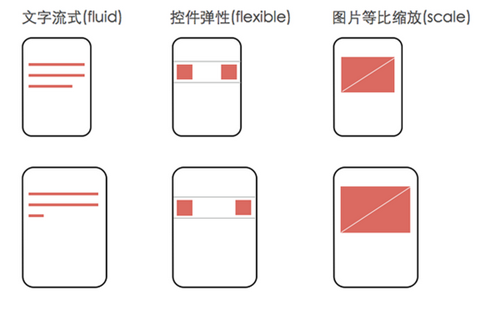
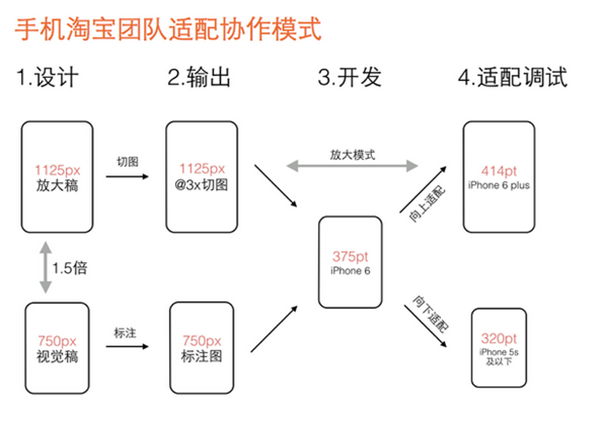

rem
https://www.jianshu.com/p/d9606faafbaf
(淘宝无限适配)手机端rem布局详解
rem是CSS3新增的相对长度单位，是指相对于根元素html的font-size计算值的大小。简单可理解为屏幕宽度的百分比。
em和rem都是相对单位，em是相对于其父元素的font-size，页面层级越深，em换算越复杂，麻烦。
rem直接相对于根元素html，避开层级关系，移动端新型浏览器对其支持较好。
拉钩zuofa
对于不同尺寸移动设备而言，如果是元素的高度不变的简单app，可以简单实现，遵循：

网易做法
js根据设计图尺寸、设备尺寸来动态计算html的font-size值，页面内各种css尺寸属性值都使用rem单位，这样不通尺寸的设备内容的宽高、边距、字体大小都会自适应
- 视口设置<meta name="viewport" content="initial-scale=1,maximum-scale=1, minimum-scale=1">
- 当页面的dom ready后设置
- document.documentElement.style.fontSize = document.documentElement.clientWidth / (设计稿宽度/100) + 'px';
- 页面内容设置尺寸为设计图尺寸/100 rem
- font-size可能需要额外的媒介查询，并且font-size不使用rem
淘宝做法
js根据设备devicePixelRatio计算scale，动态设置viewport，使设备尺寸和页面尺寸达到一致的效果
device-width = 设备的物理分辨率/(devicePixelRatio * scale) 在scale为1的情况下，device-width = 设备的物理分辨率/devicePixelRatio
- 视口设置var scale = 1 / devicePixelRatio;
document.querySelector('meta[name="viewport"]').setAttribute('content','initial-scale=' + scale + ', maximum-scale=' + scale + ', minimum-scale=' + scale + ', user-scalable=no');
- 当页面的dom ready后设置
- 动态计算html的font-size document.documentElement.style.fontSize = document.documentElement.clientWidth / 10 + 'px';
- 布局的时候，各元素的css尺寸=设计稿标注尺寸/设计稿横向分辨率/10 (也就是 各元素的css尺寸=设计稿标注尺寸/html的font-size大小)
- font-size可能需要额外的媒介查询，并且font-size不使用rem
比较网易与淘宝的做法
共同点:
- 都能适配所有的手机设备，对于pad，网易与淘宝都会跳转到pc页面，不再使用触屏版的页面
- 都需要动态设置html的font-size
- 布局时各元素的尺寸值都是根据设计稿标注的尺寸计算出来，由于html的font-size是动态调整的，所以能够做到不同分辨率下页面布局呈现等比变化
- 容器元素的font-size都不用rem，需要额外地对font-size做媒介查询，因为可能某些尺寸字体计算出来可能不是整数，会模糊
- 都能应用于尺寸不同的设计稿，只要按以上总结的方法去用就可以了
不同点:
- 淘宝的设计稿是基于750的横向分辨率，网易的设计稿是基于640的横向分辨率，还要强调的是，虽然设计稿不同，但是最终的结果是一致的，设计稿的尺寸一个公司设计人员的工作标准，每个公司不一样而已
- 淘宝还需要动态设置viewport的scale，网易不用
- 最重要的区别就是：网易的做法，rem值很好计算，淘宝的做法肯定得用计算器才能用好了 。不过要是你使用了less和sass这样的css处理器，就好办多了，以淘宝跟less举例
-
//定义一个变量和一个mixin
@baseFontSize: 75;//基于视觉稿横屏尺寸/100得出的基准font-size
.px2rem(@name, @px){
@{name}: @px / @baseFontSize * 1rem;
}
-
//使用示例：
.container {
.px2rem(height, 240);
}
-
//less翻译结果：
.container {
height: 3.2rem;
}
与设计协作

- 第一步，视觉设计阶段，设计师按宽度750px（iPhone 6）做设计稿，除图片外所有设计元素用矢量路径来做。设计定稿后在750px的设计稿上做标注，输出标注图。同时等比放大1.5倍生成宽度1125px的设计稿，在1125px的稿子里切图。
- 第二步，输出两个交付物给开发工程师：一个是程序用到的@3x切图资源，另一个是宽度750px的设计标注图。
- 第三步，开发工程师拿到750px标注图和@3x切图资源，完成iPhone 6（375pt）的界面开发。此阶段不能用固定宽度的方式开发界面，得用自动布局（auto layout），方便后续适配到其它尺寸。
- 第四步，适配调试阶段，基于iPhone 6的界面效果，分别向上向下调试iPhone 6 plus（414pt）和iPhone 5S及以下（320pt）的界面效果。由此完成大中小三屏适配。
- 注意第三步，就要使用我们以上介绍的网易跟淘宝的适配方法了。假如公司设计稿不是基于750的怎么办，其实很简单，按上图做一些相应替换即可，但是流程和方法还是一样的。解释一下为什么要在@3x的图里切，这是因为现在市面上也有不少像魅蓝note这种超高清屏幕，devicePixelRatio已经达到3了，这个切图保证在所有设备都清晰显示。